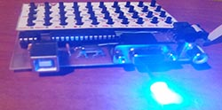

Česky:
|
ATX-80
Klon počítače ZX-80 s procesorem ATmega8
Poslední aktualizace: 15.12.2021
ATX-80 na GitHub: https://github.com/Panda381/ATX80

ATX-80 je mikropočítač odvozený od počítače ZX-80, s procesorem ATmega8. Neprovádí emulaci kódu, ale nahrazuje původní počítač vlastním kódem s podobnou funkčností v AVR assembleru. Umožňuje výstup obrazu na VGA monitor nebo na PAL/NTSC televizor. BASIC programy lze uchovávat v interní EEPROM, interní Flash nebo externí EEPROM paměti (32 paměťových slotů) a také přenášet mezi PC a pamětí. Předností je snadná konstrukce a malé rozměry. Může sloužit jako malý levný počítač pro výuku základů programování v jazyku BASIC. Součástí 32 ukázkových programů.
Obsah

Původním záměrem projektu bylo vytvořit počítač podobných vlastností a s podobným technickým omezením, jaké měl původní ZX-80. Tedy plně funkční interpreter jazyku BASIC jen s 1 KB paměti RAM a co nejblíže 4 KB paměti ROM. Projekt byl pojat i jako studium původního ROM BIOSu ZX-80. Nutno uznat, že původní BIOS ZX-80 byl obdivuhodným výtvorem. Kromě toho, že byl velmi inovátorský, byl vytvořen s vysokou optimalizací velikosti kódu a přestože to vyžadovalo značné znepřehlednění toku dat mezi funkcemi, autor si udržel přehled nad kódem s minimální chybovostí. Snažil jsem se zachovat co nejpřesnější funkčnost původního kódu a svůj kód podrobně komentovat, což může být užitečným doplňkem k objasnění funkce BIOSu. BIOS ZX-80 je velmi přínosným a poučným studijním materiálem a i přes svou letitost si zaslouží více pozornosti jako obdivuhodné dílo.
K přepisu kódu byl zvolen procesor ATmega8, který má 1 KB RAM (tedy stejné omezení jako ZX-80) a 8 KB Flash paměti. Paměti Flash je sice více oproti původním 4 KB, ale kód byl po přepisu o asi 40% delší (instrukce AVR jsou 16-bitové) a byly doplněné další funkce, jako složitější generátor obrazu, obsluha pamětí, 1 KB z interní Flash byl využit jako pamětový slot k ukládání programů, takže těch 8 KB paměti bylo účelně využito.
ATX-80 obsahuje klávesnici ze 40 mikrospínačů. Může generuje obraz pro VGA monitor a také obraz v PAL a NTSC televizní normě přes Cinch konektor. Napájí se externím +5V zdrojem přes USB konektor (USB nabíječka nebo konektor počítače). K ukládání uživatelských BASIC programů slouží externí paměť EEPROM 32 KB, která umožňuje uložení 32 programů do 32 paměťových slotů. Kromě externí EEPROM paměti lze využít i jeden interní paměťový slot v paměti Flash procesoru a tak lze např. kopírovat programy mezi různými externími EEPROM pamětmi. Editovaný program je současně automaticky zrcadlově ukládán i do interní EEPROM paměti. Ta má sice velikost jen 512 bajtů, některé programy se do ní tedy nevejdou celé, ale jednak většina programů nebývá větší než 512 bajtů (paměť RAM musí být sdílena s proměnnými a s videopamětí) a jednak u delších programů je zálohována alespoň jejich větší část.
Přednosti ATX-80 oproti původnímu ZX-80:
Omezení ATX-80 oproti původnímu ZX-80:
Při studiu ZX-80 BIOSu jsem narazil na pár menších chyb.
1) Chyba s REM příkazem. Adresa REM rutiny má být L0849 namísto L084A. Chyba způsobí, že uvedením příkazu REM bez parametrů (bez textu) se neprovede následující řádek.
2) Chyba v rutině ED-EDIT - následující instrukce mají být v opačném pořadí. Chyba může způsobit zhroucení počítače při zápisu příkazu ve chvíli plně obsazené paměti.
JR NC,L03A7 ; back to ED-COPY if not enough ; room to fill edit line. POP HL ; restore program position.
3) Následující chyba se sice neprojeví, ale je potenciálním rizikem při změně překladu. Na začátku rutiny L03CB ED-EDIT chybí inicializace registru B na hodnotu, představující počet řádků k tisku (je potřeba číslo 2 nebo vyšší). V tomto místě obsahuje registr B hodnotu 3 (vzniklou z adresy L03CB), což vyhovuje, ale překladem od jiné adresy by se mohla přestat tisknout spodní obrazovka. Je ovšem možné, že tam tuto instrukci autor vypustil vědomě, v rámci optimalizace.
Hlavním procesorem je ATmega8. V případě potřeby může být nahrazen procesory ATmega88, ATmega168 nebo ATmega328, které jsou pinově kompatibilní. Je však nutno použít jiný kód firmware, který je také připraven v balíku ke stažení. Větší paměť u vyšších typů procesorů není ovšem využita.
Procesor je poháněn krystalem 24 MHz. Tato frekvence je nutná k zobrazení potřebného rozlišení na VGA monitoru. Přestože frekvence použitého krystal leží nad mezemi deklarovanými výrobcem, v praxi bylo zjišťeno, že prakticky všechny procesory takové přetaktování zvládají v pořádku. Přesto je vhodné pro procesor použít objímku a v případě obtíží vyzkoušet jiný kus procesoru. Příčinou chybné funkce může být i nedostatečné napájecí napětí. Mezní kmitočet procesoru je závislý na napájení, nízké napájecí napětí může být důvodem že procesor nebude správně pracovat s použitým krystalem.
Klávesnice je zapojena do matice 5x8 kláves, s podobným zapojením jako původní ZX-80, jen s opačným tokem proudu. Při skenování klávesnice jsou signály COL1 až COL5 zapojeny jako vstup (tedy stav s vysokou impedanci) a pouze jeden ze signálů COL je nastaven jako výstup s úrovní LOW. Signály ROW1 až ROW8 jsou zapojeny jako vstup s interním pull-up rezistorem. Při skenování klávesnice se aktivuje jeden z COL signálů do LOW úrovně a čtením ROW signálů se zjistí stisknuté tlačítko.
Výstup MOSI z SPI generátoru je veden jako obrazový signál jednak na VGA konektor a jednak na CINCH pro výstup na televizor. Na výstupu se předpokládá zatížení vstupním odporem 75 ohmů, což zajistí potřebnou napěťovou úroveň 0,7V. Signál SYNC je výstup z časovače Timer1, který zajišťuje horizontální synchronizaci. Časovač Timer1 současně vyvolává přerušení generátoru obrazu, který vysílá obrazová data přes SPI řadič.
Signál VSYNC je využíván pouze v módu "starý VGA displej". Jinak je běžně generována synchronizační směs CSYNC na výstupu SYNC. Vertikální signál je v synchronizační směsi vytvořen negací horizontálního synchronizačního signálu. Většina současných VGA monitorů podporuje synchronizační směs a pracuje v tomto módu dobře. Pouze starší VGA monitory vyžadují použití i signálu VSYNC. U většiny monitorů by zpravidla neměl být pozorován rozdíl mezi módy starý/nový VGA monitor.
Externí EEPROM paměť je připojena přes TWI/I2C signály (SDA a SCL). Jako nejvhodnější typ je doporučena 32 KB paměť 24LC256P, která pojme 32 uživatelských programů (32 slotů, kde každý slot má velikost 1 KB). Kromě ní je možné použít i paměti 24LC32 (4KB, tj. 4 sloty), 24LC64 (8 KB, tj. 8 slotů), 24LC128 (16 KB, tj. 16 slotů) a 24LC512 (64 KB, tj. 64 slotů). Paměti se liší jen počtem dostupných paměťových slotů.
Pro paměť EEPROM je vhodné použít objímku, aby ji bylo možné v případě potřeby vyměnit za jinou, s jinými uloženými programy. Programy lze mezi pamětmi kopírovat jednak s využitím slotu v interní Flash paměti, a jednak lze využít přiložené kopírovací utility.
Použité EEPROM paměti obsahují vstupní pin pro ochranu proti zápisu. ATX-80 s tím sice nepočítá, ale bylo by možné na desku doplnit ještě konfigurační propojku, kterou je možné povolit nebo zakázat zápis do EEPROM paměti a chránit tak její obsah proti nechtěnému přepsání.
Poznámka: ATX-80 nerozezná velikost připojené EEPROM paměti. Použití správného čísla slotu ponechává na uživateli. Použijete-li číslo slotu mimo rozsah paměti, dojde k přetočení čísla slotu operací modulo na jiný slot (EEPROM ignoruje nevyužité vyšší adresové bity) a může tak dojít k nechtěnému přepsání jiného uloženého programu. Např. zápisem do slotu 34 u paměti 32 KB bude proveden zápis do slotu 2.
Poznámka 2: Předpokládá se stejný hardware i pro plánovaný klon počítače ZX-81, jen bude použit jiný procesor s větší pamětí (pravděpodobně ATmega328). Použijte proto pro procesor objímku, aby byl snadno vyměnitelný.

ATX-80 je navržen pro jednostranný plošný spoj o rozměru 100x75 mm - jednak z důvodu omezení freeware verze Eagle editoru, a jednak protože to je jeden z rozměrů běžně prodávaných plošných spojů pro fotocestu. Plošné spoje vyrábím vytištěním předlohy v inkoustové tiskárně na průhlednou folii (slepení 2 vytištěných předloh izolepou, kvůli lepšímu krytí), osvícení pomocí pole UV-LED (10 minut ze vzdálenosti 30 cm), vyvolání v hydroxidu draselném a vyleptání v chloridu železitém.
Upozorňuji, že v případě zakázkové výroby plošného spoje je nutno v předloze zkontrolovat definice průměrů děr (vrtal jsem sám a proto neověřeno).
Dolní strana plošného spoje
Horní strana plošného spoje, lze nahradit drátovými propojkami

Potisk
Montáž součástek. Pro procesor i EEPROM použijte objímku.

Osazená deska
Přes tlačítka je přeložen štítek s popiskami tlačítek. Vytiskl jsem ho na běžný papír na inkoustové tiskárně, z obou stran přelepil izolepou a poté vysekal díry pro tlačítka výsečníkem 4 mm.

Celá sestava
Pojistky nastavte následujícím způsobem:
ATmega8: low 0xEF (default 0xE1), high 0xC7
(default 0xD9)
ATmega88: low 0xF7 (default 0x62), high 0xD7 (default 0xDF), ext
0xFF (default 0xF9)
ATmega168: low 0xF7 (default 0x62), high 0xD7 (default 0xDF), ext
0xFF (default 0xF9)
ATmega328: low 0xF7 (default 0x62), high 0xD7 (default 0xD9), ext
0xFF (default 0xFF)
V pojistkách je nastaveno mapování boot loaderu paměti s nejmenší velikostí (je potřebné kvůli zápisu do interní flash paměti), ochrana interní EEPROM při programování a rychlý externí krystal.
Připojíte-li po naprogramování procesoru VGA monitor, měla by být vidět základní bílá plocha s kurzozem "K" v levém dolním rohu. Nestane-li se tak, může být zvolen jiný videomód než implicitní VGA. Přepnutí videomódu provedete tak, že podržíte na klávesnici některé z tlačítek 1 až 4 a současně zapnete napájení:
Zvolená konfigurace se uchová v posledním bajtu EEPROM paměti pro příště. Nejde-li videomód přepnout, můžete mít zkrat na některém z tlačítek.
Pozor ať uvedenou operaci s nastavením vieomódu nepoužijete u procesoru s kopírovací utilitou, mohlo by dojít k nechtěné aktivaci programování externí EEPROM.
Zda procesor pracuje, můžete zkontrolovat i bez připojení displeje. Zasuňte LED do VGA konektoru mezi piny 14 (anoda, dlouhý plus vývod) a 10 (katoda, kratší minus vývod). Zapnete-li videomód 1 (starý VGA monitor), LED se rozsvítí (VSYNC signál je aktivní), při ostatních videomódech svítit nebude. Nebo můžete LED zasunout do CINCH konektoru (anoda do dutinky, katoda na kostru) - generuje-li se obraz, LEDka bude svítit.
Upload programů do EEPROM
Po vyzkoušení základní funkce ATX-80 doporučuji naprogramovat připojenou externí EEPROM paměť. V příloze naleznete sadu utilit, s jejichž pomocí nahrajete do EEPROM sadu 32 ukázkových programů. Je k tomu nutné buď přeprogramovat hlavní procesor, nebo použít jiný procesor, sloužící jako "kopírka".
V balíku utilit je složka ATX80_Import, kde naleznete firmware (soubory BIN) pro kopírovací procesor, připravený pro procesory ATmega8/88/168/328 (první číslo ve jménu souboru BIN označuje procesor). Pro každý typ procesoru jsou připraveny 3 sady programů: slot 1 až 12, slot 13 až 24 a slot 25 až 32. Obsahy programů naleznete v balíku utilit v souborech Programs_1.txt, Programs_2.txt a Programs_3.txt. Případně i s popiskami programů v souboru Programs.txt v balíku zdrojových kódu ATX-80.
Kopírovací program kvůli úspoře paměti nepoužívá displej, ale jen indikační LED diodu. Zasuňte ji do VGA konektoru na VSYNC signál, mezi piny 14 (anoda, dlouhý plus vývod) a 10 (katoda, kratší minus vývod).

Nahrajte do procesoru program *_1.bin s první sadou ukázkových programů. LED dioda začne rychle blikat jako indikace, že je procesor v pohotovostním stavu. Stisknete-li nyní na klávesnici tlačítko 4, dioda se na několik sekund rozsvítí trvalým svitem indikujícím, že probíhá programování paměti EEPROM. Poté se opět rychle rozbliká k indikaci, že operace byla dokončena. Postupně takto nahrajte i další 2 sady ukázkových programů. Tlačítko je potřeba stisknout alespoň na půl sekundy aby došlo k jeho registraci - LED dioda se musí rozsvítit na minimálně 1 sekundu.
Kopírování programů mezi EEPROM
Soubor programů v balíku utilit slouží též ke stažení nebo kopírování programů z externí EEPROM paměti. Ke zkopírování obsahu EEPROM do jiné paměti použijte následující postup.
Do procesoru nahrajte program ze složky ATX80_Copy pro příslušný procesor. LED dioda se rozbliká pro indikaci připravenosti. Stiskněte některé z tlačítek 1 až 3. LED se na chvíli rozsvítí jako indikace probíhající operace a programy z EEPROM se stáhnou do interní Flash paměti procesoru. Tlačítko určuje, které sloty se stáhnou. Tlačítkem 1 se stáhnou sloty 1 až 11, tlačítkem 2 sloty 12 až 22 a tlačítkem 3 sloty 23 až 32. Teoreticky se do paměti ATmega8 nemusí vlézt 11 slotů - znamenaly by 11 KB paměti, ale ATmega8 má jen 8 KB. V praxi je většina programů menších a tak se vejdou i do 8 KB. Kdyby někdy ne, bylo by nutné použít procesor s větší pamětí nebo upravit počty slotů ve zdrojových kódech kopírovacího programu.
Po stažení programů do procesoru vypněte napájení, vyměňte EEPROM paměť a zapněte napájení. Tlačítkem 4 uložíte nahrané programy z Flash paměti do nové externí EEPROM paměti. Ukládají se všechny programy které jsou v paměti a ukládají se do stejných slotů, ze kterých byly stažené.
Download programů z EEPROM
Pomocí utilit můžete programy stáhnout i do PC. Nejdříve jako v předešlém případě stáhněte příslušnou sadu programů do Flash paměti procesoru (tlačítkem 1 až 3). Připojte programátor procesoru a stáhněte Flash paměť procesoru do složky ATX80_Copy, do souborů se jménem 1.bin až 3.bin. Ve složce ATX80_Export spusťte povelový soubor !.bat. To zajistí vyexportování programů ze stažených obrazů Flash pamětí do textových souborů Programs_1.txt až Programs_3.txt v základní složce utilit. V souborech můžete upravovat stažené soubory v textovém tvaru. Před kódem každého programu je návěští "SLOT x" které označuje, do kterého slotu program patří. Návěští označuje začátek programu pro další zpracování. Všechny následující řádky začínající číslem jsou zpracovány jako programové řádky. Za programovými řádky mohou následovat příkazy LET nebo DIM, obsahující naplnění číselných nebo textových proměnných.
Budete-li chtít programy v textovém tvaru nahrát zpět do EEPROM, spusťe ve složce ATX80_Import povelový soubor !.bat. Ten zajistí naimportování programů z textového tvaru zpět do obrazů kopírovacích programů. Poté už jen stačí nahrát programy do procesoru a stiskem tlačítka 4 je uložit do externí EEPROM, stejně jak bylo popsáno na začátku této kapitoly.
ATX-80 BASIC je téměř plně shodný s jazykem ZX-80 BASIC, až na pár malých odchylek.
Číslo programového řádku může být v rozsahu 1 až 9999. Po každé změně v řádcích programu se automaticky provede zálohování programu do interní paměti EEPROM. Interní paměť EEPROM má kapacitu pouze 510 bajtů a nemusí se proto do ní vejít celý program. Po zapnutí ATX-80 se zpět obnoví program uchovaný v interní EEPROM.
BASIC ATX-80 pracuje s celými čísly v rozsahu -32768 až +32767. Proměnné mohou být typu:
Operace:
Příkazy, mohou být jen na počátku řádku nebo za příkazem THEN, vyvolají se stiskem písmene:
Funkce a další povely (funkce je nutno napsat textově, nemají klávesovou zkratku):
Ukázkové programy jsou uložené v externí EEPROM ve slotech 1 až 32. Obsah EEPROM lze kopírovat do jiné EEPROM, stáhnout do PC nebo nahrát z PC do EEPROM, jak bylo popsané v kapitole Programování EEPROM.
Obsahy programů naleznete v souboru Programs.txt ve zdrojových kódech, spolu s jejich podrobnějšími popisy.
1) Výpis znakové sady.
2) Desetinné dělení s vysokou přesností

3) Výpočet odmocniny
4) Hod kostkou

5) Měření reakčního času

6) Histogram generátoru náhodných čísel

7) Skákající žáby

8) Šifrování zpráv

9) Koňské dostihy

10) Přístání na Měsíci (spouštějte pomocí GO TO 100)

11) Generátor bludiště
12) Tic Tac Toe

13) Dr. ATX80 - psychiatr (spouštějte pomocí GO TO 120)
14) Hra NIM (tahání zápalek)
15) Blackjack

16) Bubble sort (třídění)

17) Automatické přečíslování programu (spouštějte pomocí GO TO 9987)

18) Kreslení obrázku (obnovení uloženého obrázku s GO TO 200)

19) Výpočet dne v týdnu
20) Čínský zbytek (výpočet myšleného čísla)

21) Simple Simon - přepisování zapamatovaných písmen

22) Hangman - hádání písmen ve slovu

23) Výuka sčítání a odečítání

24) Výuka hlavních měst

25) Life - celulární automat
26) Generátor prvočísel

27) Řešení soustavy rovnic

28) Výpočet odmocniny na 3 místa
29) Pontoon (karty, ukázka řešení grafiky)

30) Chomp (hra - ohraničení plochy)
31) Mastermind (hra - hádání číslic)
32) Pinch (hra - obklíčení soupeře)
Cena celkem (bez plošného spoje): 285 Kč
Miroslav Němeček
Panda38@seznam.cz
{kind=link}
{kind=link}
{kind=link}
{kind=link}
{kind=link}
{kind=link}
{kind=link}
{kind=link}
{kind=link}
{kind=link}
{kind=link}
{kind=link}
{kind=link}
{kind=link}
{kind=link}
{kind=link}
{kind=link}
{kind=link}